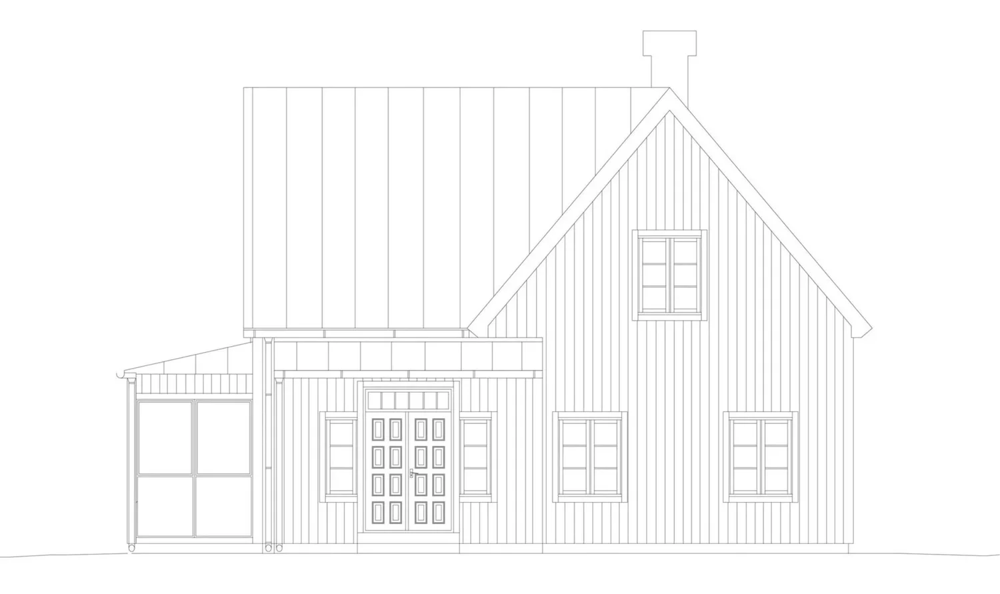
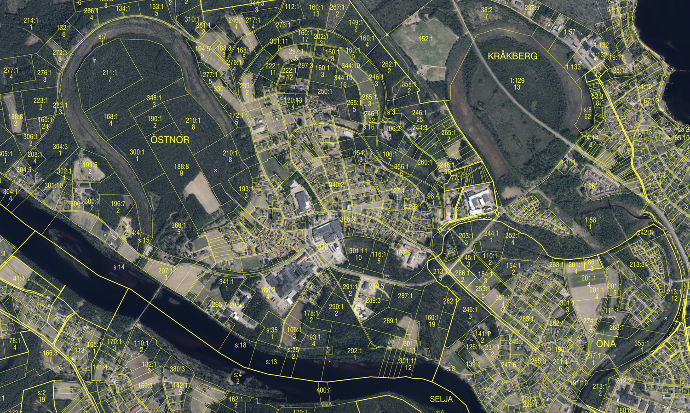
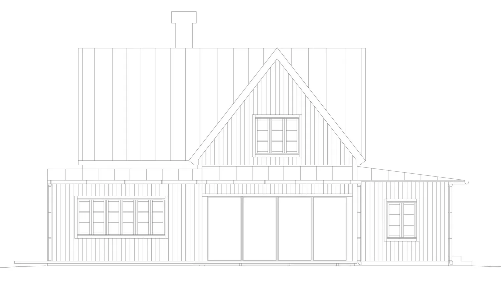
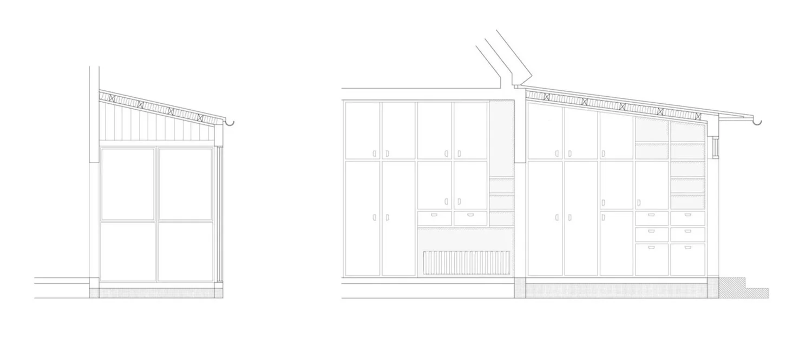
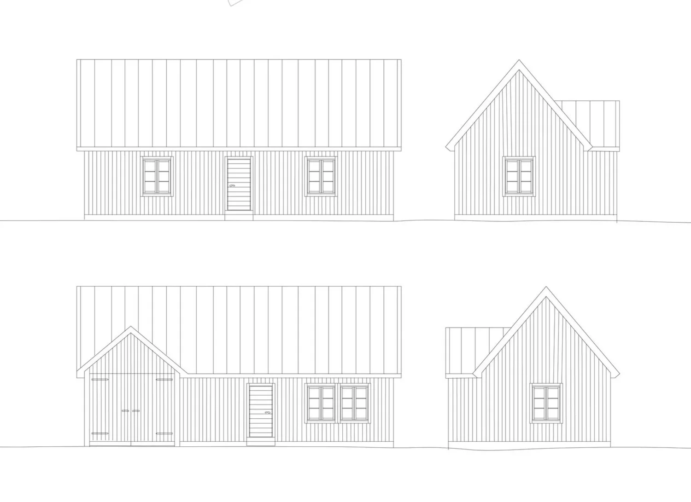
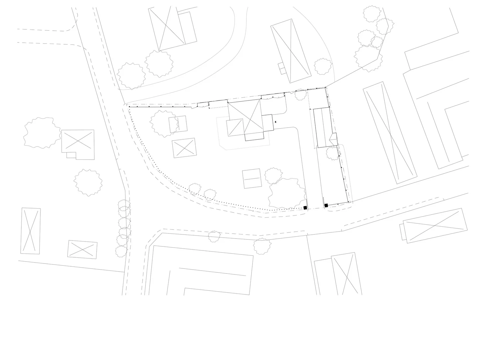

Mora · Ongoing
Renovation and extension of a house in a listed village setting. The renovation set out to restore the building's original character and to create better functional spaces for the family.





